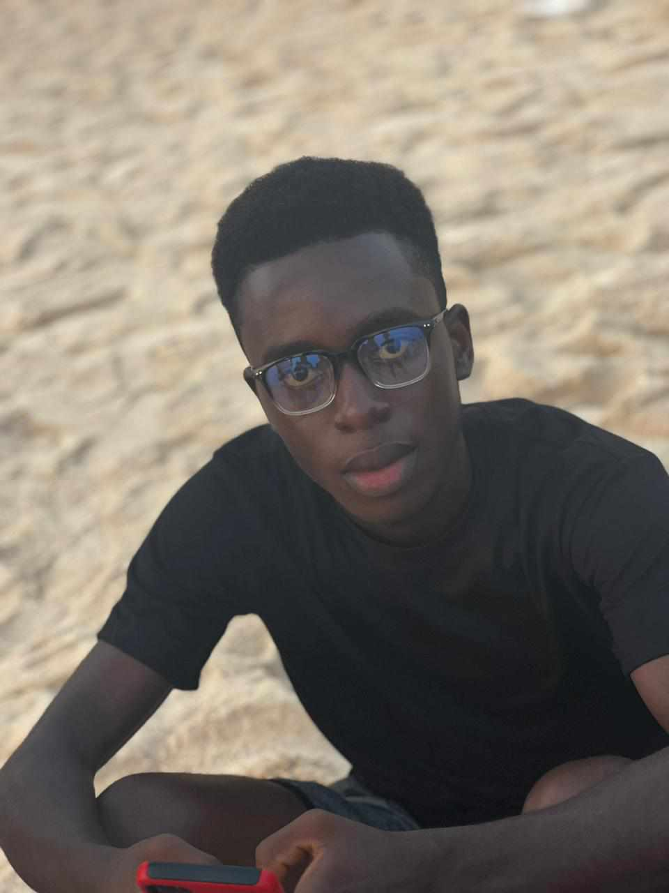

Mulubahzumu Kemmeh Sipor | WDD130
My name is Mulubahzumu Kemmeh Sipor. My friends call me Smalloo. I am going to be a software engineer, I know that because I believe that I can do it.
I love reading fantasy, action and adventures novels. I am 18 years of age. Currently self-employed. I run my own internet cafe. On thing I love most about BYU-Idaho is their effort to spread the gospel while providing quality education.
I have been a member of the church of Jesus Christ of Latter Day Saints for three years now. I believe that as a human we can do anything we set our minds to, so I encourage everyone to continue down this path and to not give up.
I welcome getting to know anyone in this class especially those who have experience in software engineering. Thank you for reading my Biography